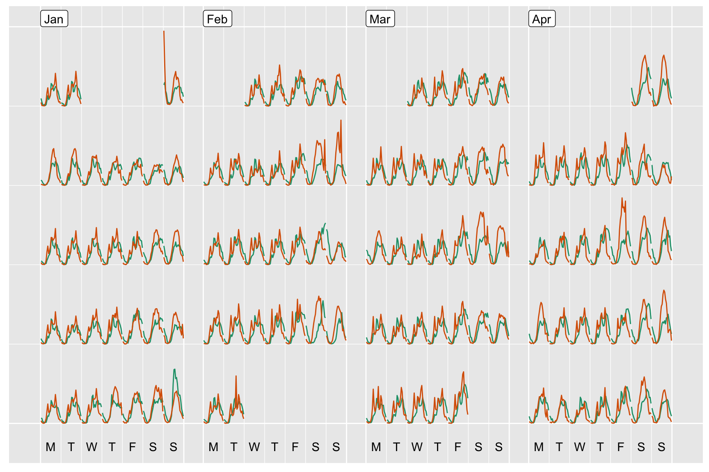

frame-calendar.RmdCalendar-based graphics turn out to be a useful tool for visually unfolding people’s daily schedules in detail, such as hourly foot traffic in the CBD, daily residential electricity demand and etc. It arranges the values according to the corresponding dates into a calendar layout, which is comprised of weekdays in columns and weeks of a month in rows for a common monthly calendar. The idea originates from Van Wijk and Van Selow (1999) and is implemented in a couple of R packages (ggTimeSeries and ggcal), yet they all are a variant of heatmap in temporal context. We extend the calendar-based graphics to a broader range of applications using linear algebra tools. For example, (1) it not only handles the data of daily intervals but also of higher frequencies like hourly data; (2) it is no longer constrained to a heatmap but can be used with other types of Geoms; (3) the built-in calendars include monthly, weekly, and daily types for the purpose of comparison between different temporal components. The frame_calendar() function returns the computed calendar grids as a data frame or a tibble according to its data input, and ggplot2 takes care of the plotting as you usually do with a data frame.
We are going to use Melbourne pedestrian data (shipped with the package) as an example throughout the vignette, which is sourced from Melbourne Open Data Portal. The subset of the data contains 7 sensors counting foot traffic at hourly intervals across the city of Melbourne from January to April in 2017.
library(tidyr)
library(dplyr)
library(viridis)
library(sugrrants)
pedestrian17 <- filter(hourly_peds, Year == "2017")
pedestrian17#> # A tibble: 19,488 x 10
#> Date_Time Date Year Month Mdate Day Time Sensor_ID
#> <dttm> <date> <dbl> <ord> <dbl> <ord> <dbl> <dbl>
#> 1 2017-01-01 00:00:00 2017-01-01 2017 Janu… 1 Sund… 0 18
#> 2 2017-01-01 00:00:00 2017-01-01 2017 Janu… 1 Sund… 0 13
#> 3 2017-01-01 00:00:00 2017-01-01 2017 Janu… 1 Sund… 0 9
#> 4 2017-01-01 00:00:00 2017-01-01 2017 Janu… 1 Sund… 0 6
#> 5 2017-01-01 00:00:00 2017-01-01 2017 Janu… 1 Sund… 0 25
#> # … with 19,483 more rows, and 2 more variables: Sensor_Name <chr>,
#> # Hourly_Counts <dbl>We’ll start with one sensor only–Melbourne Convention Exhibition Centre–to explain the basic use of the frame_calendar(). As it attempts to fit into the tidyverse framework, the interface should be straightforward to those who use tidyverse on a daily basis. The first argument is the data so that the data frame can directly be piped into the function using %>%. A variable indicating time of day could be mapped to x, a value variable of interest mapped to y. date requires a Date variable to organise the data into a correct chronological order . See ?frame_calendar() for more options. In this case, Time as hour of day is used for x and Hourly_Counts as value for y. It returns a data frame including newly added columns .Time and .Hourly_Counts with a “.” prefixed to the variable names. These new columns contain the rearranged coordinates for the calendar plots later.
centre <- pedestrian17 %>%
filter(Sensor_Name == "Melbourne Convention Exhibition Centre")
centre_calendar <- centre %>%
frame_calendar(x = Time, y = Hourly_Counts, date = Date, calendar = "monthly")
centre_calendar#> # A tibble: 2,880 x 12
#> Date_Time Date Year Month Mdate Day Time Sensor_ID
#> <dttm> <date> <dbl> <ord> <dbl> <ord> <dbl> <dbl>
#> 1 2017-01-01 00:00:00 2017-01-01 2017 Janu… 1 Sund… 0 25
#> 2 2017-01-01 01:00:00 2017-01-01 2017 Janu… 1 Sund… 1 25
#> 3 2017-01-01 02:00:00 2017-01-01 2017 Janu… 1 Sund… 2 25
#> 4 2017-01-01 03:00:00 2017-01-01 2017 Janu… 1 Sund… 3 25
#> 5 2017-01-01 04:00:00 2017-01-01 2017 Janu… 1 Sund… 4 25
#> # … with 2,875 more rows, and 4 more variables: Sensor_Name <chr>,
#> # Hourly_Counts <dbl>, .Time <dbl>, .Hourly_Counts <dbl>Consequently, .Time and .Hourly_Counts are mapped to the x and y axes respectively, grouped by Date when using geom_line(). The transformed .Time and .Hourly_Counts variables no longer carry their initial meanings, and thereby their values are meaningless.
To make the plot more accessible and informative, we provide another function prettify() to go hand in hand with frame_calendar(). It takes a ggplot object and gives sensible breaks and labels. It can be noted that the calendar-based graphic depicts time of day, day of week, and other calendar effects like public holiday in a clear manner.
prettify(p1)Scaling is controlled by the scale argument: fixed is the default suggesting to be scaled globally. The figure above shows the global scale that enables overall comparison. Another option free means to be scaled for each daily block individually. It puts more emphasis on a single day shape instead of magnitude comparison.
centre_calendar_free <- centre %>%
frame_calendar(x = Time, y = Hourly_Counts, date = Date, calendar = "monthly",
scale = "free", ncol = 4)
p2 <- ggplot(centre_calendar_free,
aes(x = .Time, y = .Hourly_Counts, group = Date)) +
geom_line()
prettify(p2)The other two choices are free_wday and free_mday, scaled conditionally on each weekday and each day of month respectively. The code snippet below gives the scaling by weekdays so that it enables to compare the magnitudes across Mondays, Tuesdays, and so on.
centre_calendar_wday <- centre %>%
frame_calendar(x = Time, y = Hourly_Counts, date = Date, calendar = "monthly",
scale = "free_wday", ncol = 4)
p3 <- ggplot(centre_calendar_wday,
aes(x = .Time, y = .Hourly_Counts, group = Date)) +
geom_line()
prettify(p3)group_by
We can also superimpose one sensor on top of the other. Without using group_by(), they will share the common scale on the overlaying graph.
two_sensors <- c("Lonsdale St (South)", "Melbourne Convention Exhibition Centre")
two_sensors_df <- pedestrian17 %>%
filter(Sensor_Name %in% two_sensors)
two_sensors_calendar <- two_sensors_df %>%
frame_calendar(x = Time, y = Hourly_Counts, date = Date, ncol = 4)
p4 <- ggplot(two_sensors_calendar) +
geom_line(
data = filter(two_sensors_calendar, Sensor_Name == two_sensors[1]),
aes(.Time, .Hourly_Counts, group = Date), colour = "#1b9e77"
) +
geom_line(
data = filter(two_sensors_calendar, Sensor_Name == two_sensors[2]),
aes(.Time, .Hourly_Counts, group = Date), colour = "#d95f02"
)
prettify(p4)
The frame_calendar() function can be naturally combined with group_by(). Each grouping variable will have its own scale, making their magnitudes incomparable across different sensors.
grped_calendar <- two_sensors_df %>%
group_by(Sensor_Name) %>%
frame_calendar(x = Time, y = Hourly_Counts, date = Date, ncol = 4)
p5 <- grped_calendar %>%
ggplot(aes(x = .Time, y = .Hourly_Counts, group = Date)) +
geom_line(aes(colour = Sensor_Name)) +
facet_grid(Sensor_Name ~ .) +
scale_color_brewer(palette = "Dark2") +
theme(legend.position = "bottom")
prettify(p5)It’s not necessarily working with lines but other geoms too. One example is a lag scatterplot on a “daily” calendar. Lagged hourly counts are plotted against hourly counts in each daily cell using a point geom.
centre_lagged <- centre %>%
mutate(Lagged_Counts = dplyr::lag(Hourly_Counts))
centre_lagged_calendar <- centre_lagged %>%
frame_calendar(x = Hourly_Counts, y = Lagged_Counts, date = Date,
calendar = "daily")
p6 <- centre_lagged_calendar %>%
ggplot(aes(x = .Hourly_Counts, y = .Lagged_Counts, group = Date)) +
geom_point(size = 0.5)
prettify(p6, size = 3)#> Warning: Removed 1 rows containing missing values (geom_point).Furthermore, the argument y can take multiple variable names in combination with vars(). The rectangular glyphs arranged on a “weekly” calendar are plotted to illustrate the usage of the multiple ys and the differences between sensors. The long data format is firstly converted to the wide format using tidyr::spread() (Wickham 2014). These two sensors are variables rather than values now, and hence can be passed to y.
two_sensors_wide <- two_sensors_df %>%
select(-Sensor_ID) %>%
spread(key = Sensor_Name, value = Hourly_Counts) %>%
rename(
Lonsdale = `Lonsdale St (South)`,
Centre = `Melbourne Convention Exhibition Centre`
) %>%
mutate(
Diff = Centre - Lonsdale,
More = if_else(Diff > 0, "Centre", "Lonsdale")
)
sensors_wide_calendar <- two_sensors_wide %>%
frame_calendar(x = Time, y = vars(Centre, Lonsdale), date = Date,
calendar = "weekly")
sensors_wide_calendar#> # A tibble: 2,880 x 14
#> Date_Time Date Year Month Mdate Day Time Lonsdale Centre
#> <dttm> <date> <dbl> <ord> <dbl> <ord> <dbl> <dbl> <dbl>
#> 1 2017-01-07 00:00:00 2017-01-07 2017 Janu… 7 Satu… 0 442 185
#> 2 2017-01-07 01:00:00 2017-01-07 2017 Janu… 7 Satu… 1 428 85
#> 3 2017-01-07 02:00:00 2017-01-07 2017 Janu… 7 Satu… 2 255 41
#> 4 2017-01-07 03:00:00 2017-01-07 2017 Janu… 7 Satu… 3 220 11
#> 5 2017-01-07 04:00:00 2017-01-07 2017 Janu… 7 Satu… 4 88 21
#> # … with 2,875 more rows, and 5 more variables: Diff <dbl>, More <chr>,
#> # .Time <dbl>, .Centre <dbl>, .Lonsdale <dbl>Having multiple ys makes it a little easier when mapping to some geoms that contain the ymin and ymax arguments, such as geom_rect and geom_ribbon. Interestingly, Lonsdale Street is busier than the Convention Centre in the evening, vice versa in the day time.
p7 <- sensors_wide_calendar %>%
ggplot() +
geom_rect(aes(
xmin = .Time, xmax = .Time + 0.005,
ymin = .Lonsdale, ymax = .Centre, fill = More
)) +
scale_fill_brewer(palette = "Dark2") +
theme(legend.position = "bottom")
prettify(p7)Can we plot a heatmap using frame_calendar() too? Yep, either x or y can be given as 1 implying identity across days. If both x and y are given as 1, only calendar grids are returned. A heatmap therefore can be drawn.
centre_daily <- centre %>%
group_by(Date) %>%
summarise(Max_Counts = max(Hourly_Counts)) %>%
ungroup()
centre_max_calendar <- centre_daily %>%
frame_calendar(x = 1, y = 1, date = Date, calendar = "monthly")
head(centre_max_calendar)#> # A tibble: 6 x 4
#> Date Max_Counts .x .y
#> <date> <dbl> <dbl> <dbl>
#> 1 2017-01-01 2930 0.537 0.894
#> 2 2017-01-02 1432 0.0750 0.783
#> 3 2017-01-03 1432 0.152 0.783
#> 4 2017-01-04 1175 0.229 0.783
#> 5 2017-01-05 1134 0.306 0.783
#> 6 2017-01-06 1008 0.383 0.783p8 <- centre_max_calendar %>%
ggplot(aes(x = .x, y = .y)) +
geom_tile(aes(fill = Max_Counts), colour = "grey50") +
scale_fill_viridis()
prettify(p8, label = "label", label.padding = unit(0.2, "lines"))As its name suggests, frame_calendar() just gives a rearranged data frame and leaves the plotting to ggplot2. This lends itself to more flexibility in calendar-based visualisation. In addition, some of these plots shown above may be produced using facets on temporal units by ggplot2; however, frame_calendar() coupled with ggplot2 is much faster than facet_* as it’s lighter weight. Lastly, it can handle long historical temporal data easily on a limited screen space as a result of calendar-based glyphs.
Looking for a fully-fledged faceting method, with formal labels and axes? Check out facet_calendar().
Van Wijk, Jarke J., and Edward R. Van Selow. 1999. “Cluster and Calendar Based Visualization of Time Series Data.” In Information Visualization, 1999.(Info Vis’ 99) Proceedings. 1999 IEEE Symposium on, 4–9. IEEE.
Wickham, Hadley. 2014. “Tidy Data.” Journal of Statistical Software 59 (10): 1–23.